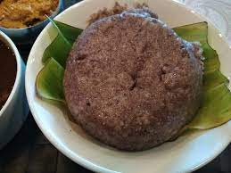

Raghi Mudde

Description
Healthy recipe rich in calcium and protein content
Ingredients
- 2 + ¼ cups water
- salt to taste
- 1 + 2 tsp ghee / clarified butter
- 1 cup + 2 tbsp raagi hittu / finger millet flour / kezhvaragu flour / nachani flour / ragulu flour
Steps
- To begin making the Ragi Mudde Recipe, heat 2-1/2 cups of water in a saucepan and add salt to it.
- Once it starts to boil, reduce the flame and add 3 tablespoons of ragi flour and whisk till there are no lumps formed and it slowly starts to thicken.
- Now, add the remaining ragi flour spoon by spoon and keep stirring so that there are no lumps.
- Make sure the heat is on low and ensure you keep stirring until it thickens completely. If you are making a larger quantity, then cover with a lid and leave the ragi aside to cook for about 5 minutes, until you notice it has thickened.
- Once you notice the ragi has thickened, continue stirring and add 2 tablespoons of ghee and keep stirring until you see the ragi has got a shine on it. It takes a good 10 minutes to make ragi mudde from 1 cup of ragi flour.
- Give the ragi mudde a taste and it should not feel raw.
- In order to shape ragi mudde to balls, grease a bowl with oil or ghee. Place 2 large tablespoons of ragi mudde and start twirling it around till it forms a nice smooth ball.
- Once done, the ragi mudde can be served hot. Note that the ragi mudde needs to be shaped into a ball while it is hot. Using a small bowl, helps in shaping the ragi mudde.
- Serve the Ragi Mudde Recipe along with Chicken Saaru, or natukodipulusu to enjoy your lunch.